Як налаштувати NoTeleport
Налаштування одноразове й займає кілька хвилин. Додаток сам веде вас кроками й позначає зеленим те, що вже зроблено. Тут те саме, але з картинками.
Знімки зроблено на «чистому» Android 14. На Samsung, Xiaomi та інших телефонах екрани налаштувань виглядають інакше, а пункти можуть називатися трохи по-іншому. Кроки ті самі.
1Відкрийте додаток
Встановіть NoTeleport і відкрийте його. На першому екрані виберіть мову й натисніть «Далі».
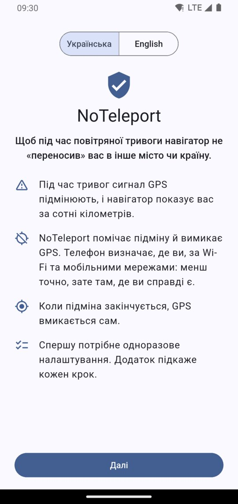
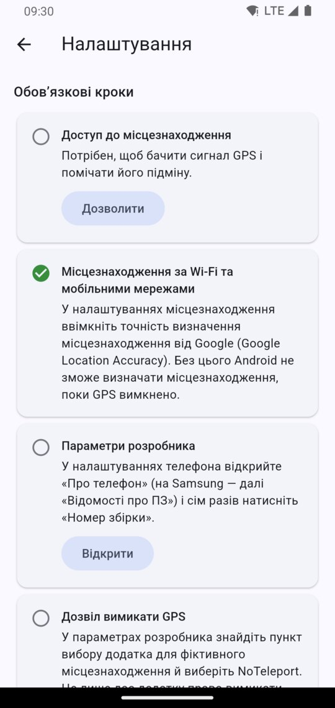
2Доступ до місцезнаходження
У кроці «Доступ до місцезнаходження» натисніть «Дозволити». У вікні, що з’явиться, залиште «Точне» й натисніть «Коли додаток використовується».
Навіщо: щоб перевіряти сигнал GPS і помічати його підміну. Місцезнаходження обробляється на телефоні й нікуди не надсилається.
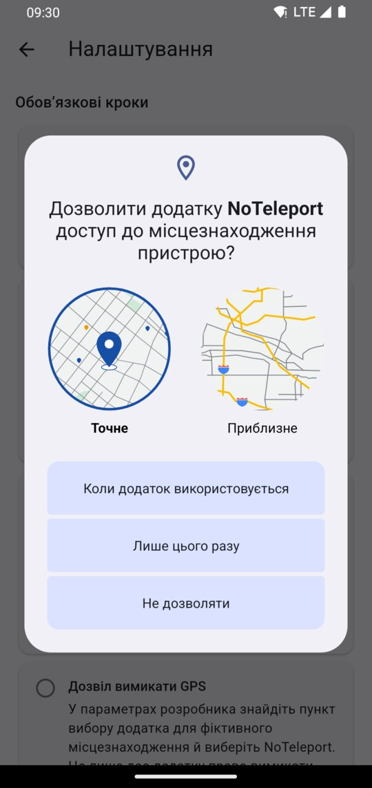
3Місцезнаходження за Wi-Fi та мобільними мережами
Зазвичай цей крок уже позначено зеленим, і робити нічого не треба.
Якщо ні, натисніть «Відкрити» й у налаштуваннях місцезнаходження ввімкніть точність визначення місцезнаходження від Google (Google Location Accuracy).
Навіщо: саме так телефон визначає, де ви, поки GPS вимкнено.
4Параметри розробника
Android дозволяє вимикати GPS лише тому додатку, який вибрано в «Параметрах розробника», тож спершу їх треба відкрити. Це штатна можливість Android: сама собою вона нічого на телефоні не змінює.
- У кроці «Параметри розробника» натисніть «Відкрити». Відкриється екран «Про телефон».
- Знайдіть у самому низу «Номер складання» й натисніть на нього сім разів поспіль. На Samsung шлях трохи довший: «Відомості про ПЗ», а там «Номер збірки».
- Якщо телефон попросить PIN-код або графічний ключ, введіть його. З’явиться напис «Тепер ви – розробник!».
- Поверніться в NoTeleport кнопкою «Назад».
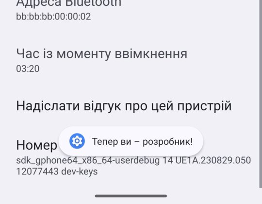
5Дозвіл вимикати GPS
- У кроці «Дозвіл вимикати GPS» натисніть «Відкрити». Відкриються «Параметри розробника».
- Прогорніть униз до розділу «Місцезнаходження». Список довгий, цей розділ ближче до кінця.
- Натисніть «Вибрати додаток для фіктивних місцезнаходжень» і виберіть NoTeleport.
- Поверніться в NoTeleport.
Сам вибір нічого не змінює: він лише дає NoTeleport право вимикати GPS, коли його підмінюють.
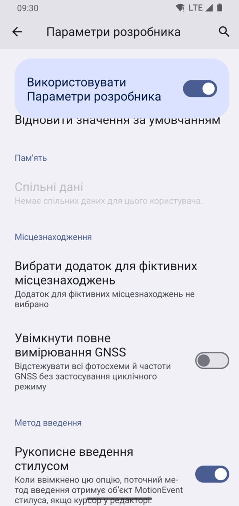
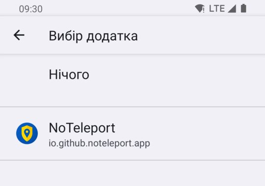
6Сповіщення
У кроці «Сповіщення» натисніть «Дозволити», а потім ще раз «Дозволити» у вікні Android.
Навіщо: зі сповіщення видно, чи працює захист і чи є підміна, і в ньому кнопка, якою захист можна вимкнути.
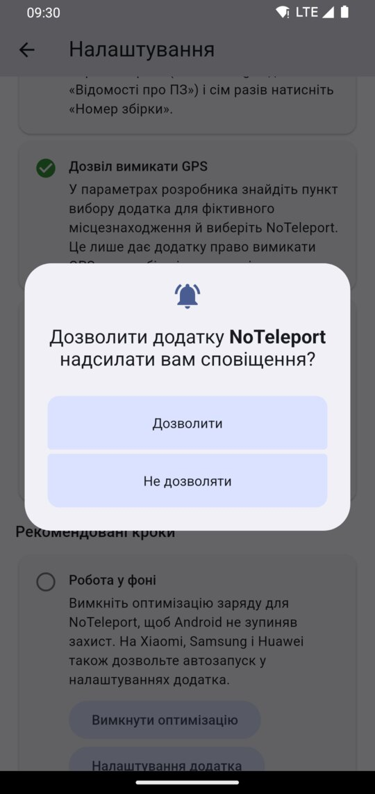
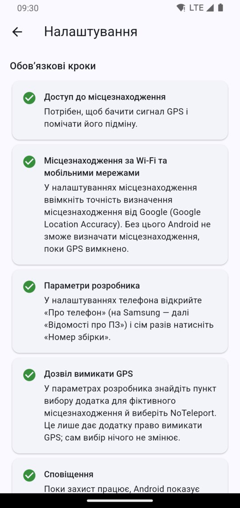
7Увімкніть захист
На головному екрані виберіть «Захист від підміни GPS». Більше нічого робити не треба: додаток можна згорнути.
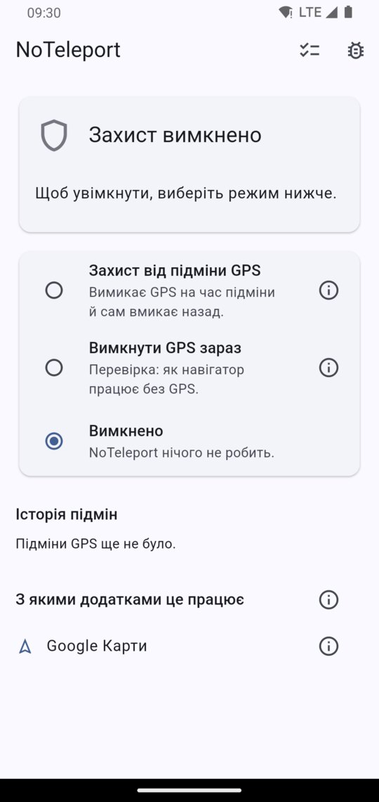
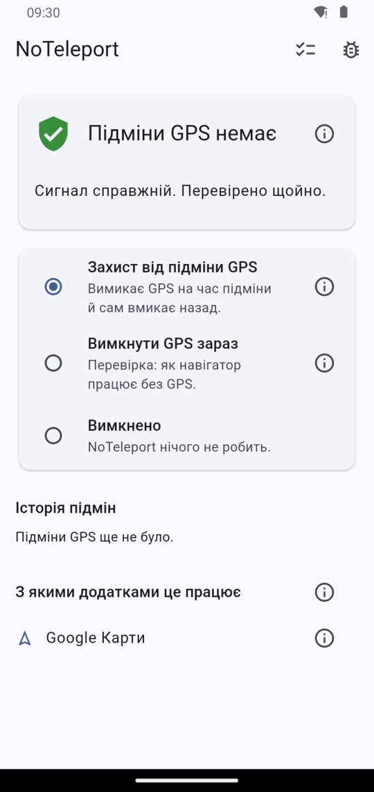
Поки захист працює, у шторці сповіщень висить одне сповіщення NoTeleport:
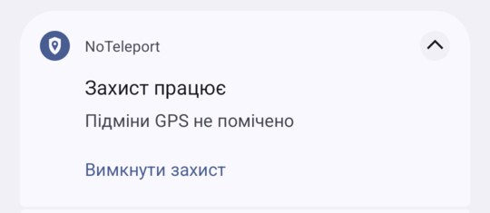
Рекомендовані кроки
Вони в тому самому списку нижче. Без них додаток працює, але з ними надійніше.
Робота у фоні
Щоб Android не зупиняв захист, у кроці «Робота у фоні» натисніть «Вимкнути оптимізацію». На Xiaomi, Samsung і Huawei також дозвольте автозапуск у налаштуваннях додатка.
Android Auto
Цей крок є лише в тих, у кого встановлено Android Auto. Android Auto може брати GPS автомобіля, а його NoTeleport вимкнути не може. Якщо в авто навігатор «переносить» вас, заберіть в Android Auto дозвіл на доступ до місцезнаходження: тоді він братиме місцезнаходження з телефона.
Перевірте, як працює ваш навігатор
Не чекайте тривоги, щоб побачити, як це буде.
- У NoTeleport виберіть «Вимкнути GPS зараз».
- Відкрийте навігатор і подивіться, наскільки правильно він показує, де ви.
- Щоб закінчити, натисніть «Увімкнути захист» у сповіщенні або виберіть інший режим у додатку.
Що буде під час підміни
NoTeleport вимкне GPS сам, а стан зміниться на «GPS підмінюють». Робити нічого не треба. Коли підміна закінчиться, GPS увімкнеться сам; це може статися на кілька хвилин пізніше.
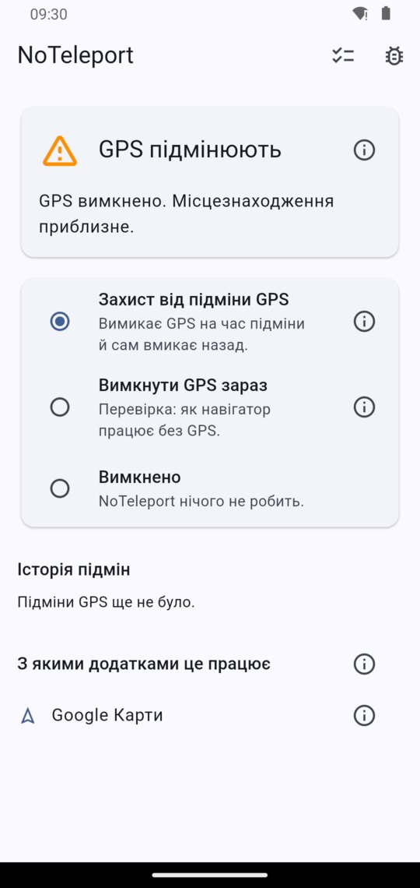
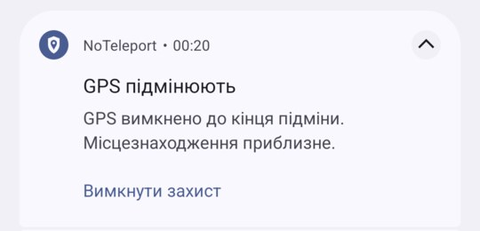
Якщо щось не так
- Сповіщення «Захист зупинено». Android закрив додаток. Відкрийте NoTeleport, і захист увімкнеться знову. Щоб таке траплялося рідше, виконайте рекомендований крок «Робота у фоні».
- Сповіщення «Захист не працює». NoTeleport більше не вибрано в параметрах розробника. Повторіть крок 5.
- Інше. Напишіть: github.com/noteleport/noteleport.github.io/issues.